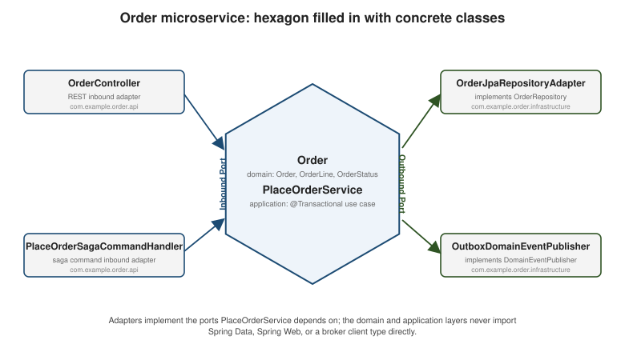

Structuring a DDD Microservice’s Code
|
This content was generated with the assistance of AI and should be verified against the official documentation before being relied on in production. |
Strategic Design for Microservices draws the boundary around a bounded context; this page is about what goes inside that boundary once code needs to be written — how business logic is organized, where a request enters and where a database write leaves, and which Java package each class belongs in. Every later page’s code (Entities, Aggregates, Repositories, Factories and Domain Services, and the rest) slots into the layout this page establishes, using the same running Order service as every other page in this section.
Transaction script vs. domain model
Richardson’s Microservices Patterns 5.1 frames the first real design choice for a service’s business logic as a spectrum with two named ends:
-
Transaction script organizes logic as one procedure per use case, operating directly on data (rows, DTOs) with little or no object model in between. It is straightforward to write and easy to follow for genuinely simple logic — a handful of
ifstatements and a database write — but it degrades badly as business rules grow: validation and invariants get duplicated across scripts, and there is no single place that owns "what makes an order valid" once ten different endpoints each place, modify, or cancel orders slightly differently. -
Domain model organizes logic around behavior-rich objects — entities, value objects, aggregates — that enforce their own invariants and expose intention-revealing operations (
order.place(command),order.cancel()) instead of letting callers manipulate raw fields. It costs more upfront design, but a rule such as "an order cannot be cancelled once it is approved" lives in exactly one place,Order, and is impossible to bypass by construction rather than by discipline.
The right choice tracks how much genuine domain complexity a service has, not how large its codebase is: a service that is mostly CRUD over a handful of fields with no real invariants gets little from a domain model and can stay a transaction script; a service like the running example’s Order context, whose whole reason for existing is enforcing order-lifecycle rules and coordinating a multi-step saga, is exactly the case a domain model is for. This section assumes a domain model throughout, because the patterns it covers — aggregates, domain events, sagas — only make sense once there is a domain model to hang them on.
The layered architecture, restated briefly
A domain-model service is usually organized into four layers, from the outside in:
-
Interface (or presentation) — what the outside world talks to: REST controllers, message listeners, gRPC service implementations.
-
Application — the use-case layer: orchestrates one use case per operation, but contains no business rule of its own.
-
Domain — the model itself: entities, value objects, aggregates, domain events, domain services. Framework- free by design.
-
Infrastructure — everything that talks to the outside world on the domain’s behalf: JPA repository implementations, message producers, HTTP clients to other contexts.
This is exactly the same shape as hexagonal (ports and adapters) architecture, described in depth on Architectural Patterns' hexagonal-architecture section — the domain sits at the hexagon’s center, application services form the inner ring of ports the domain exposes and depends on, and the interface/infrastructure layers above become the adapters plugged into those ports from outside. That page’s explanation of ports, adapters, and why the domain never depends on REST, JPA, or Kafka directly is not repeated here; this page picks up exactly where it leaves off, applying the same shape specifically to a DDD microservice’s application-service layer and package layout.
Application services: the transaction boundary
An application service is the layer where "hexagonal ports" and "one aggregate per transaction" meet: it is
the class annotated @Transactional, and its job, every single time, is the same four-step shape —
-
load exactly one aggregate (never two — Aggregates covers why a transaction spanning two aggregates is the boundary DDD asks services not to cross),
-
invoke a behavior on it (never manipulate its fields directly from outside),
-
save it back through its repository, and
-
publish whatever domain events that behavior produced.
Nothing else belongs here: no business rule (that lives in the aggregate), no HTTP or message-format concerns (those live in the adapters either side of it), no direct SQL (that lives in the repository implementation). An application service is deliberately thin and easy to read top to bottom precisely because everything it could otherwise be tempted to do has a more specific home somewhere else in the layout.
Two kinds of adapter sit on either side of the application-service ports:
-
Inbound adapters drive a use case into the application layer: a REST controller translating an HTTP request into a command, a saga command handler reacting to an orchestrator’s message, an event consumer reacting to another context’s published event. Every inbound adapter’s job ends the same way — build a command object and call the application service — regardless of what triggered it.
-
Outbound adapters are driven by the domain or application layer to reach the outside world: a repository implementation persisting an aggregate through Spring Data JPA, an event-publisher implementation putting a domain event on an outbox row or a broker topic. The domain and application layers depend only on the interfaces these adapters implement (
OrderRepository, a publisher port) — never on the concrete Spring Data or Kafka types themselves.
Package layout, and what goes into a DTO vs. a command vs. an event
The running example packages the Order bounded context under com.example.order, split by layer rather than by
technical concern spread across the whole codebase (no repository-wide controllers/services/repositories
packages spanning every context):
com.example.order
├── domain // Order, OrderLine, OrderStatus, OrderId, domain events, OrderRepository (interface)
│ └── event // OrderPlaced, OrderApproved, OrderRejected, OrderCancelled
├── application // PlaceOrderService, PlaceOrderCommand, application-level use-case orchestration
├── infrastructure // JPA mapping, OrderRepository implementation, outbox/event-publisher adapters
│ └── acl // anticorruption-layer translators for other contexts' DTOs (see Strategic Design)
└── api // REST controllers/DTOs, saga command handlers, event consumers (inbound adapters)domain depends on nothing else in this list; application depends only on domain; infrastructure and api
depend on both domain and application, never the reverse — the same dependency-inversion rule hexagonal
architecture states for ports and adapters in general, applied to package boundaries specifically. Three
different shapes of object recur across these packages, and keeping them distinct avoids the single most common
DDD-in-practice confusion:
-
DTO (data transfer object) — lives in
api(or a shared contract module), shaped for the wire: a REST response body, a saga reply payload. It has no behavior and no invariants of its own; it exists only to be serialized.CatalogProductDtofrom Strategic Design's anticorruption-layer example is exactly this shape, for an inbound integration rather than an outbound response. -
Command — lives in
application, shaped for intent: "please do this," carrying exactly the data one use case needs and nothing else (PlaceOrderCommand(CustomerId customerId, List<OrderLine> lines)). A command is never persisted or published to other contexts as-is; it is consumed once, synchronously, by the application service it names. -
Event — lives in
domain.event, shaped as a past-tense fact: "this already happened" (OrderPlaced,OrderApproved). Unlike a command, an event is meant to be published, potentially to many consumers who were never aware the originating command existed — Domain Events covers their design in depth.
Spring Modulith’s @ApplicationModule is the framework-level way to make this same package boundary
enforceable rather than merely conventional: annotating com.example.order (or letting Modulith infer the
module from the package structure) lets it verify at build or test time that, say, nothing in com.example.
inventory reaches into com.example.order.domain directly, and that the only way one module observes another
module’s state changes is through the same application events
Spring
Modulith’s application-events and event-externalization support already documents. Whether a project splits
this way into one microservice per bounded context immediately, or starts as a Spring Modulith-enforced modular
monolith and extracts services later, the package layout above stays the same either way — Modulith just adds a
build-time check that the boundary this page draws by convention is not silently crossed.
Code: PlaceOrderService
PlaceOrderService is the application service for the Order context’s central use case, following the four-step
shape above exactly: load nothing (there is no existing aggregate for a new order), create the aggregate via
its factory, save it, and publish the events the factory produced. OrderRepository and DomainEventPublisher
are both ports — interfaces the domain/application layer defines and infrastructure implements, never the other
way around:
package com.example.order.application;
import com.example.order.domain.Order;
import com.example.order.domain.OrderCreation;
import com.example.order.domain.OrderLine;
import com.example.order.domain.OrderRepository;
import com.example.shared.CustomerId;
import com.example.shared.event.DomainEvent;
import org.springframework.stereotype.Service;
import org.springframework.transaction.annotation.Transactional;
import java.util.List;
public record PlaceOrderCommand(CustomerId customerId, List<OrderLine> lines) {
}
@Service
public class PlaceOrderService {
private final OrderRepository orderRepository;
private final DomainEventPublisher domainEventPublisher;
public PlaceOrderService(OrderRepository orderRepository, DomainEventPublisher domainEventPublisher) {
this.orderRepository = orderRepository;
this.domainEventPublisher = domainEventPublisher;
}
@Transactional
public OrderCreation placeOrder(PlaceOrderCommand command) {
OrderCreation creation = Order.place(command);
Order order = creation.order();
long version = orderRepository.save(order); // the version the store now holds for this aggregate
domainEventPublisher.publish("Order", order.id().value().toString(), version, creation.events());
return creation;
}
}
/**
* Outbound port: implemented in infrastructure, e.g. by writing to the transactional outbox table in
* the same local transaction as orderRepository.save(...). Public because its implementation lives in
* another package. The aggregate version is the one the repository just persisted; it travels in every
* event envelope so a read model can be checked against it (see CQRS).
*/
public interface DomainEventPublisher {
void publish(String aggregateType, String aggregateId, long aggregateVersion, List<DomainEvent> events);
}PlaceOrderService never imports anything from com.example.order.infrastructure or com.example.order.api — it depends only on OrderRepository and DomainEventPublisher, both ports owned by the domain/application
layers, with infrastructure providing the concrete adapters at runtime through Spring’s dependency injection. The
@Transactional boundary covers exactly the aggregate save and the event publication together, which is what
makes the transactional outbox pattern work: as long as
domainEventPublisher.publish(…) only writes an outbox row in the same transaction (rather than calling a
broker directly), the order row and its outbox row commit or roll back together.
The hexagon, filled in with the running example
The figure below places the running Order service’s actual classes into the same hexagonal shape
Architectural
Patterns introduces generically: Order and PlaceOrderService at the center, concrete inbound adapters
driving the application service from the left, concrete outbound adapters it drives from the right.
